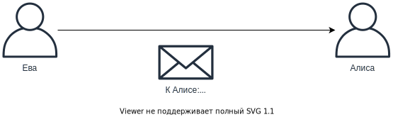
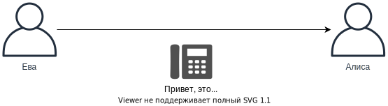

Кибербезопасность. Тестирование на проникновение
Тестирование на проникновение & Социальная инженерия
Тестирование на проникновение служит упреждающей мерой, чтобы попытаться определить уязвимости в службах и организациях до того, как это смогут сделать другие злоумышленники.
Тестирование на проникновение может быть предложено во многих областях, например:
- Веб-приложения. Разрабатываются и выпускаются новые веб-приложения.
- Сеть и инфраструктура. Многие приложения не являются веб-приложениями, а вместо этого используют другие протоколы. Эти организационные приложения могут размещаться как снаружи, так и внутри.
- Внутреннее тестирование/Компьютерное моделирование зараженных. Что, если пользователь получает вредоносное ПО в свою систему? Это было бы почти равносильно тому, что злоумышленник использует клавиатуру в этой системе, что представляет серьезный риск для любой организации.
- Внешнее организационное тестирование. Тест, который проводится в рамках всей организации как область для тестировщиков на проникновение. Это идеальный вариант, но часто требует наличия собственной группы внутреннего тестирования на проникновение, чтобы сосредоточиться на этом долгосрочном плане, или высоких затрат, связанных с наймом внешней команды для проведения этого теста.
- Сценарий кражи ноутбука. Более подробно описано в наших сценариях ниже.
- Клиентские приложения. На предприятии существует множество приложений, написанных на разных языках, таких как C, C++, Java, Flash, Silverlight или другое скомпилированное программное обеспечение. Эти активы также можно сосредоточить на тесте на проникновение.
- Беспроводные сети. Тест, который позволяет выяснить, можно ли взломать WIFI, есть ли на устройствах устаревшее и уязвимое программное обеспечение, и была ли проведена надлежащая сегментация между беспроводной сетью и другими сетями.
- Мобильные приложения (Android, Windows Phone, IOS). Мобильные приложения могут иметь уязвимости, а также включать подключения и ссылки на системы, размещенные внутри предприятия. Мобильные приложения также могут хранить секреты, такие как ключи API, которые могут быть легко использованы злоумышленниками.
- Социальная инженерия. Более подробно описано в наших сценариях ниже.
- Фишинг и Вишинг. Более подробно описано в наших сценариях ниже.
- Физический. Команда тестирования на проникновение может попытаться увидеть, что произойдет, если они появятся в каком-либо месте с ноутбуком и подключатся к сетевому соединению. Физические атаки могут также включать другие виды скрытых атак на места.
- ICS ("Промышленные системы управления")/SCADA ("Диспетчерский контроль и сбор данных"). Эти системы обычно контролируют некоторые из наиболее уязвимых и критических активов в организациях, и поэтому они должны подвергаться тщательной проверке.
Тестирование на проникновение без знания, с частичным и полным знанием
В зависимости от задания организация может решить предоставить информацию команде, проводящей тестирование на проникновение. Проникновение без знания, иногда называемое черным ящиком, подразумевает, что злоумышленнику заранее не сообщается о неизвестности. Частичное знание, иногда называемое тестом серого ящика, означает, что злоумышленникам даны некоторые знания, а с тестом на проникновение с полным знанием, иногда называемым белым ящиком, тестеры на проникновение получают все необходимое, начиная с исходного кода и сетевых диаграмм, журналы и многое другое.
Чем больше информации организация может предоставить группе тестирования на проникновение, тем более высокую ценность она может предоставить.
Сценарий кражи ноутбука
Отличный сценарий тестирования на проникновение - доказать последствия кражи или потери ноутбука. У систем есть привилегии и учетные данные, которые злоумышленники могут использовать для проникновения в целевую организацию.
Система может быть защищена паролем, но существует множество методов, которые могут позволить злоумышленникам обойти эту защиту. Например :
- Системный жесткий диск может быть не полностью зашифрован, что позволяет злоумышленнику установить жесткий диск в своей системе для извлечения данных и учетных данных. Эти учетные данные, в свою очередь, могут быть взломаны и повторно использованы на многих страницах входа в систему.
- Пользователь мог заблокировать систему, но он все ещё вошел в систему. У этого пользователя есть приложения и процессы, работающие в фоновом режиме, даже если они заблокированы. Злоумышленники могли попытаться добавить в систему вредоносную сетевую карту, например, через USB. Эта сетевая карта пытается стать для системы предпочтительным способом выхода в Интернет. Если система использует эту сетевую карту, злоумышленники теперь могут видеть сетевой трафик и пытаться найти конфиденциальные данные, даже изменить данные.
Как только злоумышленники получают доступ к системе, они могут начать рейд для получения информации, которая может быть использована для дальнейшего продвижения целей злоумышленников.
Социальная инженерия
Система настолько сильна, насколько силен её самый слабый член, и зачастую это человек. Социальная инженерия предполагает нацеливание на пользователей атак с целью заставить их совершить действия, которые они не собирались делать. Этот вид техники очень популярен, и многие из крупнейших хакерских атак в мире связаны с использованием методов социальной инженерии.
Социальная инженерия часто пытается злоупотребить определенными аспектами, чтобы заставить жертв выполнять действия, например:
- Большинство людей хотят быть вежливыми, особенно с незнакомцами;
- Профессионалы хотят выглядеть хорошо информированными и умными;
- Если вас хвалят, вы часто будете больше говорить и больше рассказывать об этом;
- Большинство людей не лгут ради лжи;
- Большинство людей ласково отзываются о людях, которые их беспокоят.
Когда кто-то подвергается атаке с помощью хорошей социальной инженерии, он часто даже не осознает, что подвергся нападению.
Сценарий социальной инженерии: быть полезным
Обычно люди хотят помогать друг другу. Нам нравится делать приятные вещи!
Рассмотрим сценарий, в котором Ева наталкивается на приёмную большого корпоративного офиса с бумагами, пропитанными кофе. Секретарша ясно видит Еву в беде и задаётся вопросом, что происходит. Ева объясняет, что через 5 минут у неё собеседование при приеме на работу, и ей действительно нужно распечатать документы для собеседования.
Заранее Ева подготовила вредоносный USB-накопитель с документами, предназначенный для взлома компьютеров, к которым он подключен. Она передает секретарю вредоносный USB-накопитель и с улыбкой спрашивает, может ли администратор распечатать для неё документы. Это может быть то, что нужно злоумышленникам, чтобы заразить систему во внутренней сети, что позволит им скомпрометировать (развернуть) больше систем.
Сценарий социальной инженерии: использование страха
Люди часто опасаются потерпеть неудачу или не выполнить приказ. Злоумышленники часто используют страх, чтобы заставить жертв сделать то, что нужно злоумышленникам. Например, они могут попытаться представить себя директором компании, запрашивая информацию. Возможно, в социальных сетях выяснилось, что директор уехал в отпуск, и это может быть использовано для организации атаки.
Жертва, вероятно, не хочет бросать вызов директору, а поскольку директор в отпуске, может быть сложнее проверить информацию.
Сценарий социальной инженерии: игра на взаимности
Возмездие - это что-то взамен, например ответ кому-то, кто проявит к вам доброту.
Если мы считаем, что кто-то придерживает для вас дверь, чтобы впустить вас в парадную дверь вашего офисного здания. Из-за этого вам, вероятно, захочется удержать ближайшую дверь, чтобы человек ответил взаимностью. Эта дверь может быть за контролем доступа, требуя, чтобы сотрудники предъявляли свои значки, но чтобы предложить такую же доброту в ответ, дверь держится открытой. Это называется упущением.
Сценарий социальной инженерии: использование любопытства
Люди от природы любопытны. Что бы вы сделали, если бы нашли USB-накопитель, лежащий на земле за пределами офисного здания? Подключить? Что, если бы на USB-накопителе был документ с заголовком "Информация о зарплате - текущие обновления"?
Злоумышленник может намеренно сбросить множество вредоносных USB-накопителей в том месте, где проживают сотрудники, в надежде, что кто-то их подключит.
Документы могут содержать вредоносные макросы или эксплойты или просто обманывать пользователей, заставляя их выполнять определенные действия, в результате чего они сами себя скомпрометируют.
Фишинг
Фишинг - это метод, который обычно осуществляется через электронную почту. Злоумышленники будут пытаться заставить сотрудников раскрыть конфиденциальные данные, такие как учетные данные, или заставить их установить вредоносные приложения, дающие злоумышленникам возможность контролировать систему.

Злоумышленники часто используют фишинг для взлома, которым также могут попытаться воспользоваться тестеры на проникновение. Важно никогда не недооценивать человеческий фактор в кибербезопасности. Пока в него вовлечены люди, фишинг всегда будет возможным способом для злоумышленников получить доступ к системам.
Фишинг не должен использоваться для доказательства того, что люди совершают ошибки. Постарайтесь доказать последствия этих ошибок. Его также можно использовать для проверки эффективности фильтров защиты от спама и осведомленности пользователей.
Вместо одного раунда можно провести кампанию с множеством попыток фишинга. Кампания из нескольких фишинговых раундов может помочь определить общую осведомленность организации, а также дать им понять, что не только злоумышленники пытаются обмануть наших пользователей, но даже отдел безопасности.
Вишинг
Вишинг означает использование телефонных звонков, чтобы заставить ничего не подозревающих сотрудников выполнить действия для злоумышленников. Если сотрудник считает, что разговаривает по телефону с кем-то из своих знакомых, желательно с авторитетным лицом, сотрудника можно обманом заставить совершить нежелательные действия.

Вот пример, когда Ева звонит Алисе:
Ева: Привет, это мисс Ева. Генеральный директор Маргарет сказала мне позвонить вам лично; она сказала, что ты сможешь помочь.
Алиса: Хорошо... Что я могу для тебя сделать?
Ева: Маргарет сейчас в путешествии, но срочно просит сбросить её пароль, чтобы мы могли продолжить деловую встречу, которая состоится, когда она приземлится.
Ева: Мы срочно просим изменить её пароль к электронной почте, чтобы она могла провести встречу.
Ева: Можете ли вы изменить ее пароль на Margareth123?
Алиса: Я не уверена...
Ева: Пожалуйста, Маргарет попросила вас лично выполнить эту просьбу. Это нужно делать сейчас, не хочу думать о последствиях, если нет...
Алиса: Хорошо. Пароль сброшен...
Вишинг может попытаться заставить жертв раскрыть конфиденциальную информацию. Это может быть злоумышленник, запрашивающий копию конфиденциального документа или электронной таблицы и т.п.